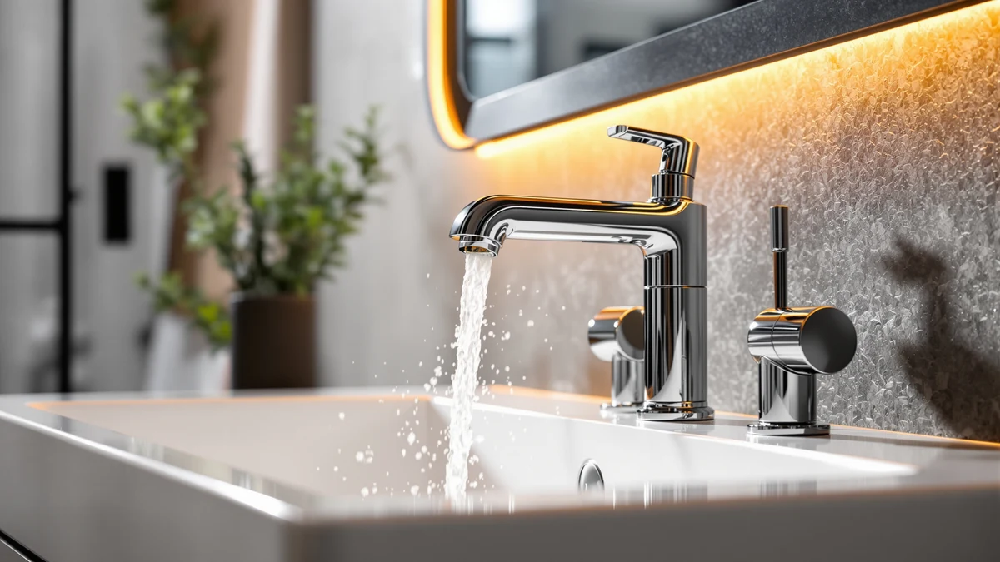

Things to Know Before You Buy
- Chrome tolerates vinegar better than any other finish. A chrome bathroom faucet can handle an undiluted vinegar soak with no discoloration risk, unlike oil-rubbed bronze or matte black, which need dilution and a shorter soak.
- Soap and vinegar solve different problems. Dish soap lifts grease and skin oils, while vinegar dissolves the chalky mineral deposits that soap leaves untouched.
- The mirror finish shows every spot. Chrome's polished surface makes water droplets and fingerprints visible faster than brushed or matte finishes, so drying matters more here than on any other faucet type.
- The aerator causes most flow complaints. A weak or sputtering stream usually traces back to a clogged screen at the spout tip, not the valve or your home's water pressure.
Knowing how to clean chrome bathroom faucets properly means matching the cleaner to a mirror-like plating that shows every water spot and fingerprint within days of a fresh wipe-down. Hard water leaves chalky white rings around the spout and base, soap scum builds a hazy film across the handles, and the aerator screen inside the spout tip collects mineral grit until the stream weakens or sprays sideways. None of that needs a specialist or a product you don't already keep under the sink.
The full routine breaks into a soap wash for everyday grime, a vinegar soak for mineral deposits, an aerator rinse that restores water pressure, and a final buff that keeps the polished surface from spotting again. Budget about 30 minutes for a chrome bathroom faucet, since there's no dilution or timing to worry about the way there is with matte black or oil-rubbed bronze hardware. One habit matters more than any product: dry the chrome completely after every cleaning, because a mirror finish holds onto every droplet mark until you wipe it away.
What You'll Need
- Supplies: white vinegar, mild dish soap, and baking soda, the core supplies for cleaning a chrome bathroom faucet
- Tools: a microfiber cloth, a soft-bristled toothbrush, and a spray bottle
Step 1: Wipe Away Loose Dust and Soap Scum
Start every chrome bathroom faucet cleaning with a plain water rinse, since loose dust and toothpaste splatter will grind into scratches if you go straight for a scrub. Wet a microfiber cloth with warm water, add two or three drops of mild dish soap, and wipe the spout, handles, and base in one direction rather than circles, which spreads grit instead of lifting it.
Pay extra attention to the seam where the base meets the sink deck and the grooves around the handle levers. Soap scum and skin oils collect there first and dull the chrome's reflection long before hard water spots show up. A second pass with a clean, damp cloth removes the soap residue so it doesn't streak once it dries.
Step 2: Wrap Hard Water Spots in a Vinegar Soak
Hard water leaves calcium and lime deposits that soap alone won't touch, and chrome is the one bathroom faucet finish that shrugs off vinegar without any discoloration risk, so skip the dilution and testing step you'd need for oil-rubbed bronze or matte black hardware. Soak a rag or a few paper towels in undiluted white vinegar, wrap them directly around the crusted areas, and leave them in place for 15 to 20 minutes so the acid has time to break down the mineral bonds.
For a faucet that hasn't been cleaned in months, fill a small spray bottle with vinegar instead and mist the entire fixture, letting it sit the same 15 to 20 minutes before you move to scrubbing. The vinegar smell fades within an hour of rinsing, and it won't damage the chrome plating even with repeated monthly use in hard water areas.
Step 3: Scrub the Base, Handles, and Aerator
Once the vinegar has softened the deposits, a soft-bristled toothbrush reaches into the seams a cloth can't. Scrub the base ring, the collar under each handle, and the threads around the spout tip using light, circular pressure. Chrome plating on a bathroom faucet is thin, so skip steel wool, scouring powder, or anything labeled abrasive. Those tools scratch through the finish in one pass and expose the base metal underneath, which then corrodes.
If crusty buildup remains after the toothbrush pass, mix baking soda with a few drops of water into a paste and work it into the spot with the same brush. The mild abrasion lifts what the vinegar loosened without scratching the plating. Unscrew the aerator at the spout tip if the stream has been weak or uneven, and drop it into a small bowl of vinegar for the same 15 to 20 minutes so the mesh screen clears out separately.
Step 4: Rinse the Faucet Thoroughly
Turn the water on and let it run over the base, handles, and spout of the chrome bathroom faucet for a full 30 seconds, moving the handles through their full range so water reaches the seams you scrubbed. This clears out any grit the toothbrush loosened but didn't fully remove, which would otherwise sit against the chrome and cause micro-scratches over time.
Reattach the aerator, then run the water again briefly to flush out any remaining vinegar smell and confirm the stream is running straight and full instead of sputtering or spraying sideways. A weak stream after reassembly usually means the aerator threads aren't seated, not that the cleaning failed.
Step 5: Dry and Buff to a Streak-Free Shine
Chrome shows water spots faster than almost any other bathroom faucet finish, because the mirror-polished surface has nowhere for droplets to hide. Dry every surface immediately with a clean, dry microfiber cloth, working in small circles rather than long streaks, which pushes water into the seams instead of lifting it off.
This 30-second step is what actually keeps a chrome bathroom faucet looking new. Skip it, and the same minerals you spent 20 minutes dissolving will redeposit as the water evaporates on its own. Repeat the full cleaning monthly in hard water areas, or every six to eight weeks otherwise, and wipe the faucet down with a dry cloth after normal use to stretch the interval even further.
Common Mistakes to Avoid
The most common mistake is reaching for an abrasive pad or steel wool on a stubborn spot. Chrome is a thin layer of plating over brass or zinc, and one pass with anything labeled "scouring" scratches through it permanently, exposing the base metal to corrosion that no amount of cleaning fixes afterward. Stick to microfiber cloths and soft-bristled toothbrushes even when buildup on a chrome bathroom faucet looks stubborn.
Skipping the dry-and-buff step ranks second. Chrome's mirror finish makes every water droplet visible as it evaporates, so a faucet left to air-dry ends up spotted again within an hour, even right after a full vinegar treatment. Thirty seconds with a dry cloth is what separates a spot-free faucet from one that looks streaky under bathroom lighting.
Mixing bleach or ammonia-based cleaners with vinegar is a mistake with consequences beyond the faucet, since the combination produces toxic fumes in an enclosed bathroom. Use one cleaner at a time and rinse thoroughly between products.
Finally, people forget the aerator entirely and blame low water pressure on the plumbing. The screen at the spout tip is the first place mineral deposits collect, and a sputtering or sideways stream usually clears up the moment that screen gets a proper soak instead of a new faucet.
Our Top Picks
If your current chrome bathroom faucet has pitted or corroded past what cleaning can fix, these three replacements are easy to keep spot-free with the same routine above.

Editor's Pick
BELZ Chrome Bathroom Faucet Lead-Free
BELZ's single-piece chrome body has fewer seams than a two-handle setup, so there's less surface for hard water spots to collect between cleanings.
$31.34
Check Price on Amazon
Best Value
Delta Foundations Centerset Chrome Bathroom
Delta's centerset design keeps the handles close to the spout, so one vinegar wrap covers the whole fixture instead of three separate soaks.
$65.54
Check Price on Amazon
Premium Choice
Bathroom Faucet Hurran 4 inch
Hurran's smooth, low-profile handles skip the textured grooves that trap soap scum on more ornate faucets, cutting your scrub time in half.
$29.98
Check Price on AmazonFrequently Asked Questions
What is the best way to clean a chrome bathroom faucet?
Does vinegar damage chrome faucets?
How do you remove hard water stains from a chrome faucet?
How often should you clean a chrome bathroom faucet?
Why does my chrome faucet keep getting water spots?
Verdict
Knowing how to clean chrome bathroom faucets comes down to three steps done in order: soap for everyday grime, a 15 to 20 minute vinegar soak for hard water deposits, and a full dry-and-buff pass that keeps the mirror finish from spotting again. Chrome tolerates vinegar better than almost any other finish, so there's no dilution or timing to worry about the way there would be with matte black or oil-rubbed bronze hardware. Budget about 30 minutes for the full routine, run it monthly if you're in a hard water area, and don't skip the aerator soak if the stream has started to sputter. The habit that matters most costs 30 seconds: buff the faucet dry immediately after every cleaning, since chrome shows droplet marks faster than any brushed finish. And if your current fixture has pitted past what cleaning can fix, the BELZ chrome faucet from our picks above replaces it with a single-piece body that has fewer seams for water spots to collect in the first place.